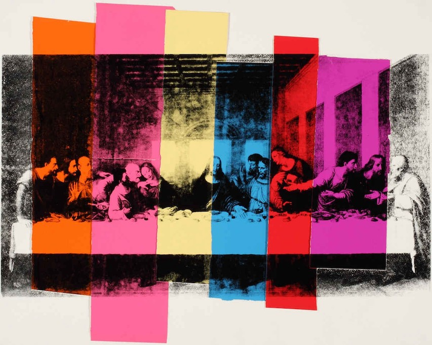

Andy's view on religion and tradition is still relevant
The painter stared at him. "My dear boy, what nonsense!" he cried. "Do you mean to say you don't like what I did of you? Where is it? Why have you pulled the screen in front of it? Let me look at it. It is the best thing I have ever done. Do take the screen away, Dorian. It is simply disgraceful of your servant hiding my work like that. I felt the room looked different as I came in."
"My servant has nothing to do with it, Basil. You don't imagine I let him arrange my room for me? He settles my flowers for me sometimes--that is all. No; I did it myself. The light was too strong on the portrait."
"Too strong! Surely not, my dear fellow? It is an admirable place for it. Let me see it." And Hallward walked towards the corner of the room.
A cry of terror broke from Dorian Gray's lips
and he rushed between the painter and the screen. "Basil," he said, looking very pale, "you must not look at it. I don't wish you to."
"Not look at my own work! You are not serious. Why shouldn't I look at it?" exclaimed Hallward, laughing.
"If you try to look at it, Basil, on my word of honour I will never speak to you again as long as I live. I am quite serious. I don't offer any explanation, and you are not to ask for any. But, remember, if you touch this screen, everything is over between us."
Hallward was thunderstruck. He looked at Dorian Gray in absolute amazement. He had never seen him like this before. The lad was actually pallid with rage. His hands were clenched, and the pupils of his eyes were like disks of blue fire. He was trembling all over.
"Dorian!"
"Don't speak!"